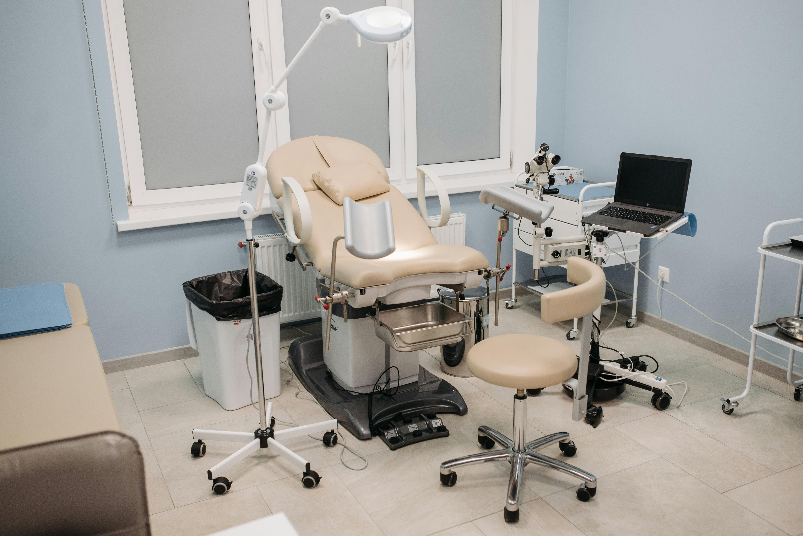
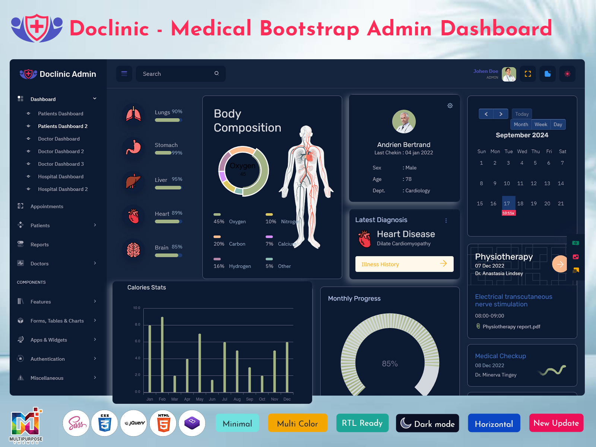

24/7 AI Receptionist
Never miss a patient call again. Our AI answers calls, schedules appointments, and confirms bookings automatically.

FlowClinic AI helps small clinics automate scheduling, reduce no-shows, and improve patient flow without increasing staff workload.
Never miss a patient call again. Our AI answers calls, schedules appointments, and confirms bookings automatically.
Automatically fills canceled time slots with patients from your waitlist to maximize clinic efficiency.
Works with your existing scheduling software without disrupting your current workflow.
Small clinics lose thousands of dollars each month due to no-shows and missed calls. FlowClinic AI coordinates appointments, reminders, and follow-ups while helping staff focus on patient care.
Our system improves operational efficiency and supports long-term clinic growth.

Whether you are a solo dentist or a multi-provider clinic, FlowClinic AI scales with your needs.
Access reports on no-show rates, booking patterns, and patient engagement to make smarter decisions.
Book your free demo today and discover how automation can transform your clinic operations.